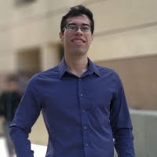

|  |
Edwin Arkel Rios MSc Student in EECS National Chiao Tung University Hsinchu, Taiwan edwinarkel.rios@gmail.com [GitHub] [Resume] |
My name's Edwin and I come from Panama. I did my undergrad studies in Energy Engineering. National Cheng Kung University in Tainan, Taiwan. Currently, I'm pursuing a MSc in Electrical Engineering and Computer Science in National Chiao Tung University, Taiwan. I work on applications of signal and image processing for biomedical purposes making use of deep learning and computer vision.
Projects

|
Computer Vision for Autonomous Driving Done in Python, making use of TensorFlow, Keras and OpenCV, and ROS. Final project for Deep Learning course (108-1). Also included slides for midterm presentation covering VGG network paper. [VGG Paper Slides] [Final Project Slides] |
|
DeblurGAN for videos Done in Python for Digital Image Processing course (108-1). Also included slides for midterm presentation covering DeblurGANv2 paper. [VGG Paper Slides] [Final Project Slides] |